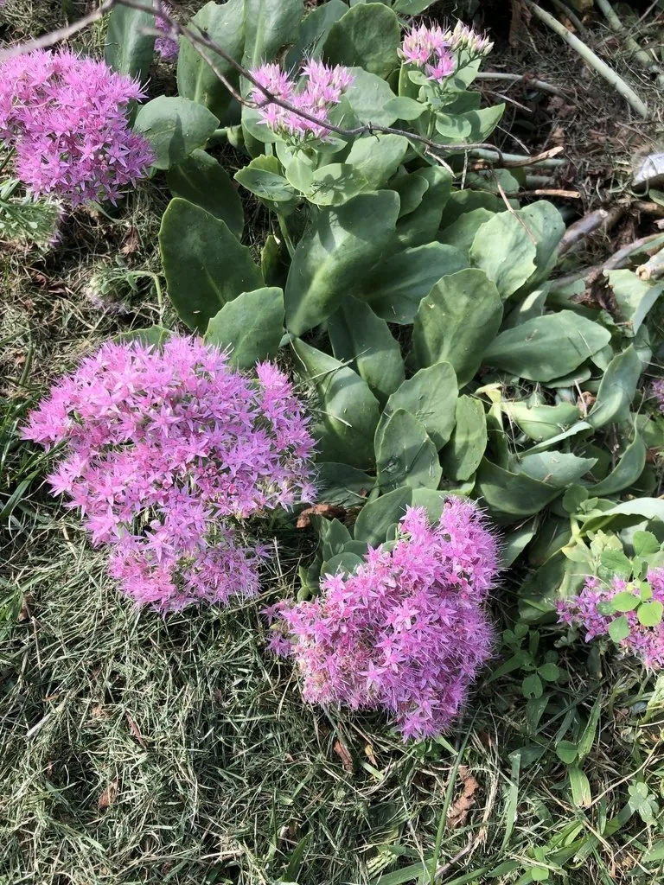

多肉植物 · 植物界
八宝景天 Hylotelephium spectabile

景天科八宝属多年生肉质草本，叶片灰绿、花序伞房状，粉红色小花密集成片，是秋季重要的蜜源与园林植物。
- 分类
- 门被子植物门纲木兰纲目虎耳草目科景天科属八宝属
- 栖息环境
- 山坡、草地与石缝，喜阳光充足、排水良好，耐旱耐寒
- 地理分布
- 中国、日本、朝鲜；中国南北各地常见栽培
- 保护级别
- IUCN 暂无评估；分布较广，栽培普遍
物种志
八宝景天为多年生肉质草本，高 30–70 厘米，茎直立、粗壮，全株被白粉。叶片对生或轮生，倒卵形至椭圆形，长 5–10 厘米，肉质、灰绿色，边缘具疏齿。伞房花序顶生，直径 10–15 厘米，花粉红色至紫红色，花瓣 5 枚，星形，密集成片，花期 8–9 月；蓇葖果成熟时开裂。
本种分布于中国、日本、朝鲜，生于山坡、草地与石缝，喜阳光充足、排水良好的环境，耐旱、耐寒、耐瘠薄。它秋季开花，粉红色花序密集成片，是重要的蜜源植物，能吸引大量蝴蝶与蜜蜂；园林中常用于花境、岩石园与屋顶绿化。八宝景天全草可入药，有清热解毒、活血散瘀之效。冬季地上部分枯萎，以根状茎越冬，翌年春季重新萌发。
形态与习性
- 株高30–70 厘米，茎直立粗壮
- 叶片倒卵形，肉质、灰绿色，被白粉
- 花期8–9 月，花粉红色、伞房花序
- 光照强阳性，需充足直射光
- 水分耐旱，忌积水
- 土壤疏松肥沃、排水良好的沙质壤土
- 主要用途花境、岩石园、蜜源与全草入药
趣味知识
- 八宝景天在秋季开花，粉红色小花密集成伞房状，是蝴蝶与蜜蜂的秋季食堂。
- 它的叶片和茎上覆盖一层白粉，呈现出独特的灰绿色。
- 八宝景天耐寒耐旱，在北方露地越冬后，春天会从根茎重新萌发。
- 全草入药有清热解毒、活血散瘀的作用，民间常用于跌打损伤。